Inimigos
O jogo possuí mais de 170 inimigos únicos que você encontra nas profundezas do reino de hallownest, cada um possuí aparências e habilidades únicas que diversificam o estilo de combate
Bosses
Guardiões dos sonhadores
Encarregados de proteger os sonhadores e manter o selo seguro
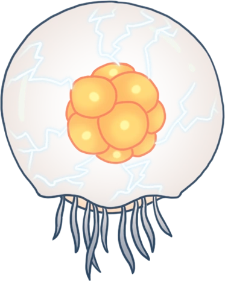
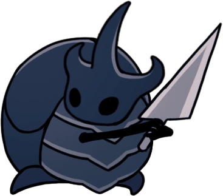
Bosses do mundo dos sonhos
Bosses que só podem ser alcançados no mundo dos sonhos
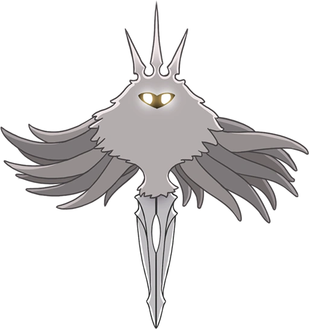
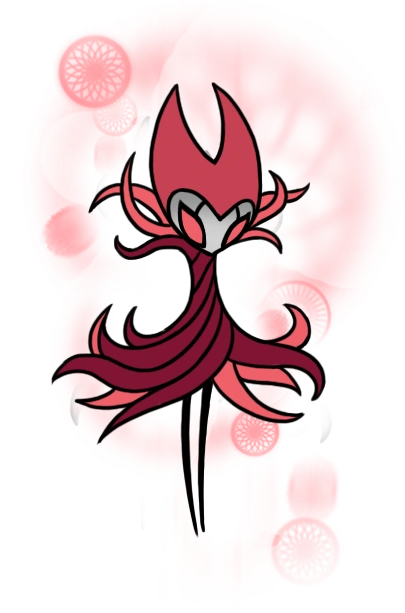
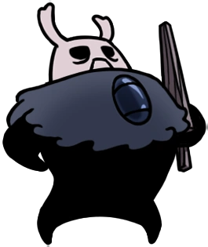
Guerreiros dos sonhos
Memórias persistentes de insetos particurlamente fortes
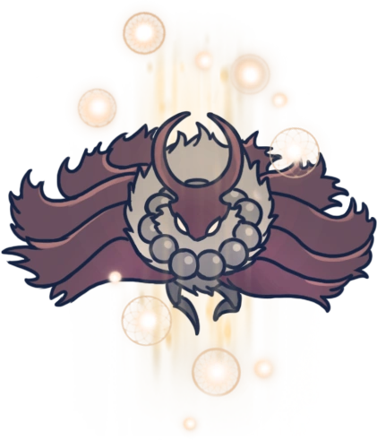
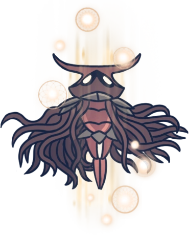
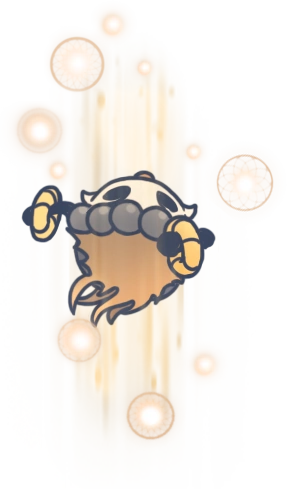
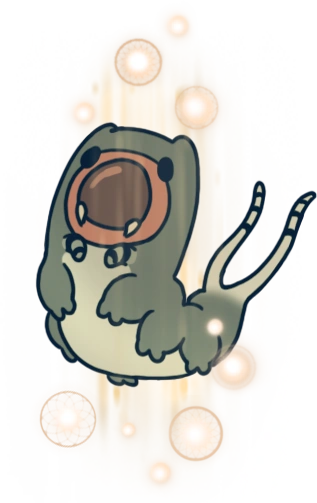
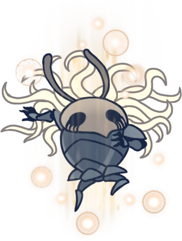
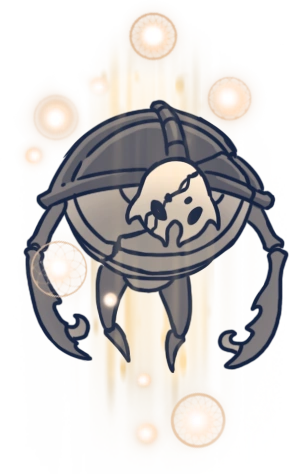

Bosses exclusivos do panteão
Guerreiros que só podem ser enfrentados com a sintonização da procuradora de deuses
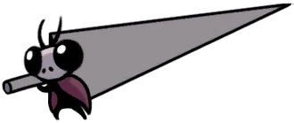
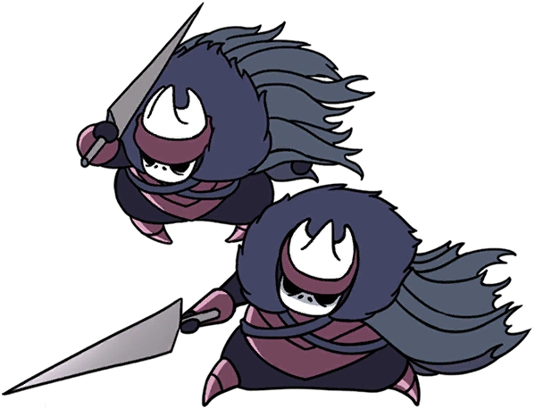
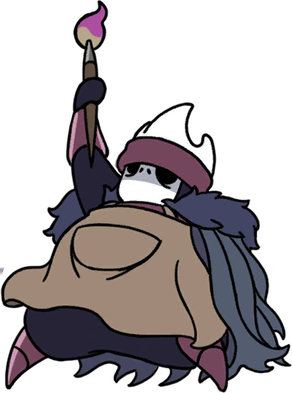
Encruzilhada esquecida


Caminho verde
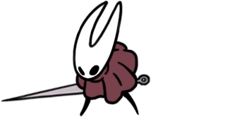

Pico de Cristal

Hermos Fungicos
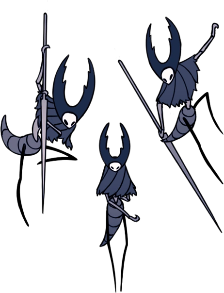
Cidade das Lágrimas
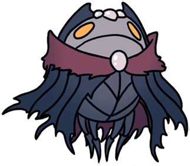
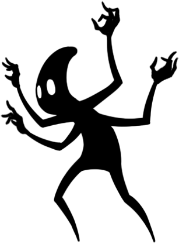
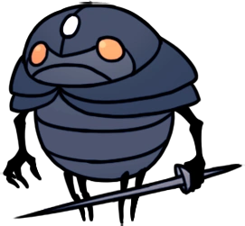
Ninho Profundo
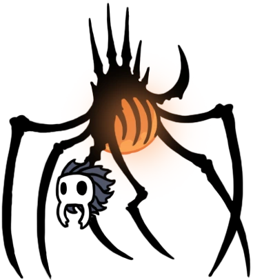
Hidrovia Real

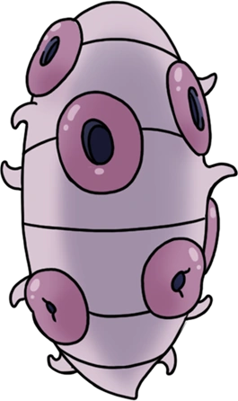
Bacia Antiga
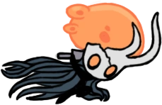
Jardins da rainha
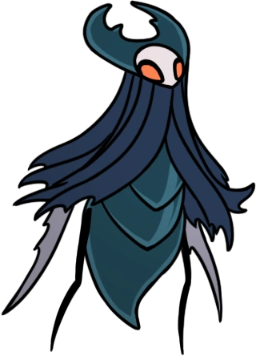
A colmeia
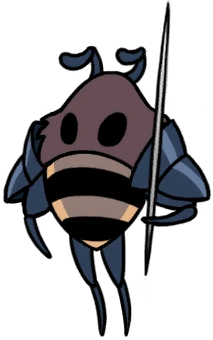
O Coliseu dos tolos
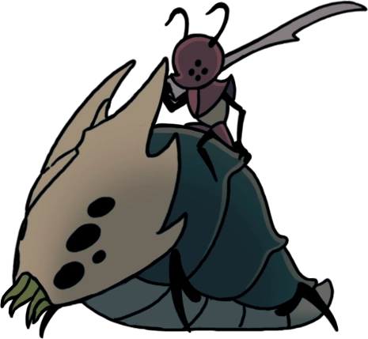
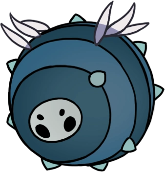
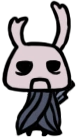